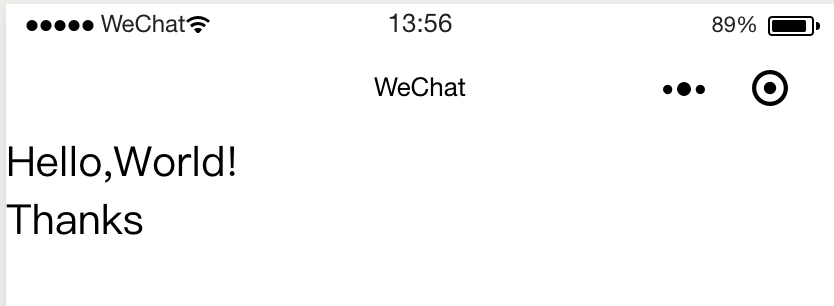
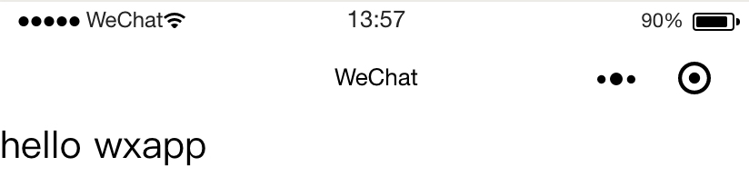

WXML
WXML（WeiXin Markup Language）是框架设计的⼀套标签语⾔，结合组件、WXS和事件系统，可以构建出⻚⾯的结构。
语法
<标签 属性名="属性值" 属性名="属性值"></标签>
Practice
<view class="m30" data-id="10">
Hello,World!
<view>
Thanks
</view>
</view>
Present

特性
数据绑定
Pratice
Mustache方式
<!-- index.wxml -->
<view>
<text>{{msg}}</text>
</view>
// index.js
Page({
data: {
msg: "hello wxapp"
}
})
Present

属性绑定
<view>
<text data-name="{{autherName}}"></text>
</view>
Page({
data: {
autherName: "xiaocc"
}
})
运算符绑定
<view hidden="{{flag ? true : false}}">
Hidden
</view>
Page({
data: {
flag: false
}
})
字符串运算绑定、组合式绑定、扩展运算符绑定
标签共同属性
| 属性名 | 类型 | 描述 | 注解 |
|---|---|---|---|
| id | String | 组件的唯一标识 | 保持整个页面唯一 |
| class | String | 组件的样式表 | 在对应的wxss中定义的样式表 |
| style | String | 组件的内联样式 | 可以动态设置的内联样式 |
| hidden | Boolean | 组件是否显示 | 所有组件默认显示 |
| data-* | Any | 自定义属性 | 组件上触发事件时，会发给事件处理函数 |
bind*/catch* |
EventHandler | 组件的事件 |